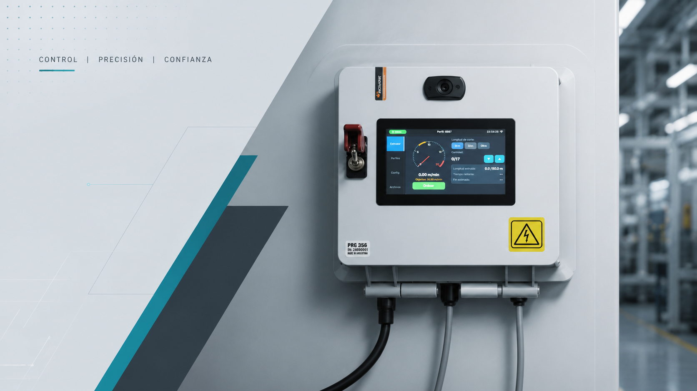
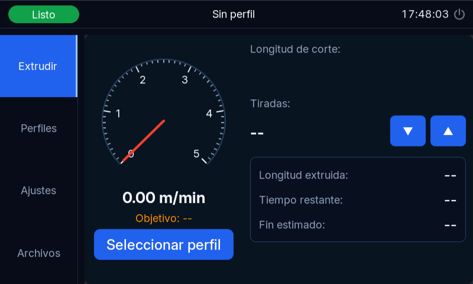
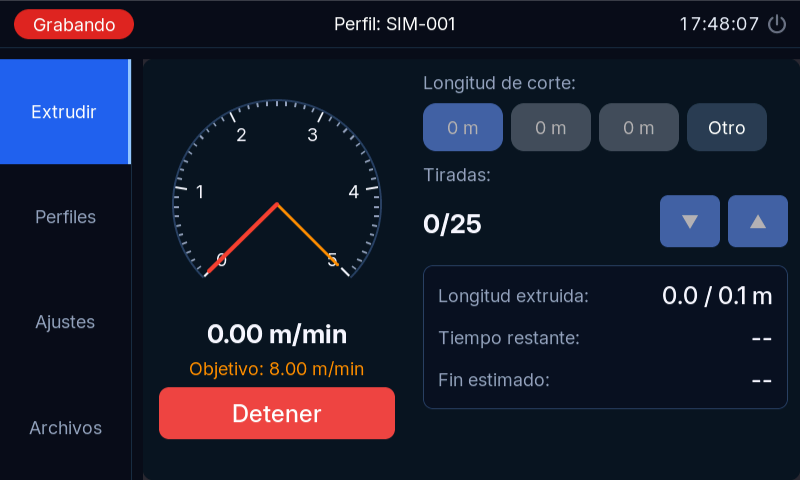
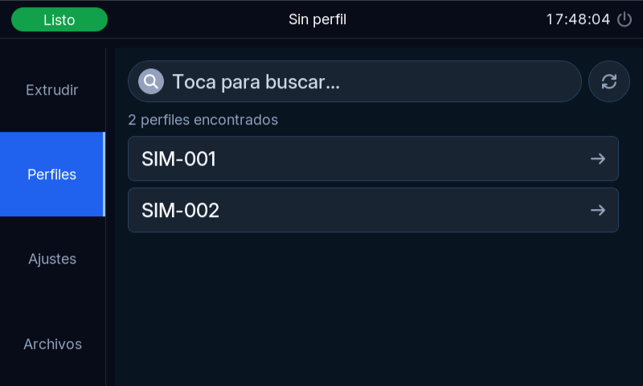
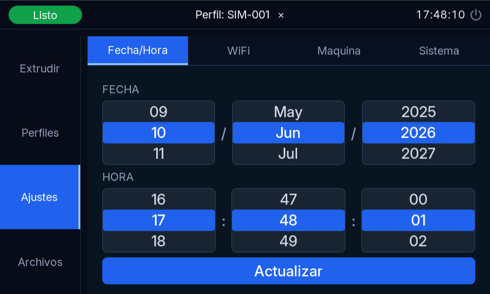
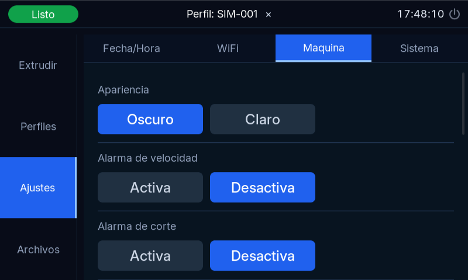
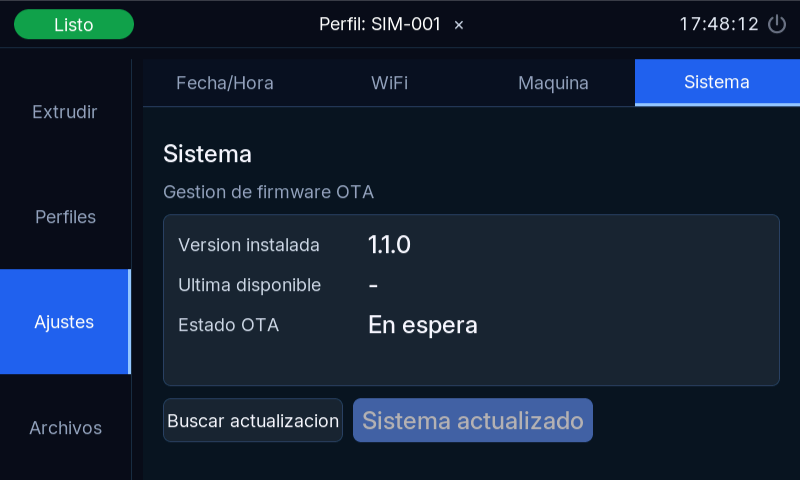
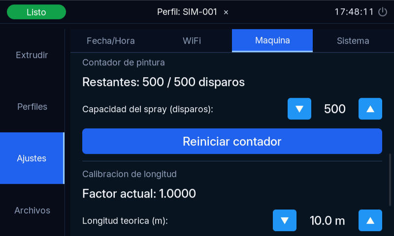

Control y Monitoreo de Líneas de Extrusión de Caucho

Leer detenidamente antes de poner en marcha el equipo. Esta hoja debe ser firmada por el responsable de planta y una copia debe quedar en poder del fabricante.
El/la abajo firmante declara haber recibido, leído y comprendido la presente Hoja de Seguridad y Advertencias, y se compromete a respetar sus instrucciones y a comunicarlas al personal a su cargo.
Original: responsable de planta | Copia: Pablo Meinardo
ExtrusionController es un sistema electrónico de control y monitoreo diseñado específicamente para líneas de extrusión. Se instala en la máquina extrusora y cuenta con una pantalla táctil a color de 5" y 800×480 píxeles que permite al operador y al supervisor interactuar con el sistema de forma sencilla, sin necesidad de conocimientos de programación ni computadoras.
El sistema fue desarrollado con el objetivo de mejorar la trazabilidad, reducir el desperdicio de material y facilitar el control del proceso de extrusión.
ExtrusionController cumple las siguientes funciones principales:
| Componente | Descripción |
|---|---|
| Unidad principal (pantalla) | Tablero con pantalla táctil de 5" instalado en la extrusora. Es el cerebro del sistema. |
| Sensor inductivo | Sensor instalado sobre una rueda dentada que mide cuántos metros de perfil han salido de la extrusora. |
| Relé 1 – Corte/Marcado | Activa la cortadora o el marcador automático en el momento del corte. |
| Relé 2 | Activa una alarma que emite señales sonoras para alarmas y avisos de corte |
| Buzzer (zumbador) | . |
| Tarjeta SD | Almacena los registros históricos de producción. Sin tarjeta SD, el sistema funciona pero no guarda datos. |
| Módulo WiFi (integrado) | Permite conectar el equipo a la red de la planta para acceso remoto. |
| Reloj de tiempo real (RTC) | Mantiene la hora exacta aunque el equipo esté off-line o apagado. |
La interfaz está diseñada para ser usada con guantes de trabajo finos. Se recomienda no presionar la pantalla con objetos duros o afilados para no rayarla.
En la parte superior de la pantalla siempre se muestra una barra de estado con la siguiente información:
| Elemento | Descripción |
|---|---|
| Hora actual | Muestra la hora del sistema en formato HH:MM:SS. |
| Estado WiFi | Ícono que indica si el equipo está conectado a la red WiFi de la planta. |
| Indicador de estado |
Listo — El sistema está en espera, sin producción activa. Grabando — Hay una producción en curso registrándose. Alarma — Se detectó una condición anormal (ver Capítulo 7). |
En la parte izquierda de la pantalla hay cuatro pestañas que permiten navegar entre las secciones principales del sistema:
| Pestaña | Función |
|---|---|
| Extruir | Pantalla principal de producción. Desde aquí se controla y monitorea la extrusión en tiempo real. |
| Perfiles | Selección del perfil de caucho a producir. Se debe seleccionar antes de iniciar la producción. |
| Archivos | Acceso a los registros de producciones anteriores almacenados en la tarjeta SD. |
| Ajustes | Ajuste de parámetros del sistema: fecha/hora, WiFi, parámetros de máquina y actualizaciones. |
Esta es la pantalla principal de trabajo. Muestra toda la información necesaria para controlar y monitorear la producción en tiempo real.

| # | Elemento | Descripción |
|---|---|---|
| 1 | Velocímetro | Instrumento que muestra visualmente la velocidad objetico y actual de extrusión en metros por minuto (m/min). El rango va de 0 a 5 m/min. |
| 2 | Velocidad actual | Indica la velocidad instantánea en m/min con mayor precisión. |
| 3 | Velocidad objetivo | Aguja fija de color naranja que indica la velocidad objetivo del perfil seleccionado. La aguja roja (velocidad actual) debe coincidir con ella durante la producción normal. |
| 4 | Tiradas | Total de tiradas producidas desde que se inició la grabación actual. |
| 5 | Metros extruidos | Total de metros de perfil producidos desde que se inició la grabación actual. |
| 6 | Tiempo restante estimado | Estimación del tiempo que falta para completar la cantidad de piezas programada. |
| 7 | Hora estimada de finalización | Hora del día a la que se estima terminar el lote según el ritmo actual. |
| 8 | Perfil activo | Nombre y código del perfil de caucho seleccionado actualmente para producir. |
| 9 | Longitud de corte | Longitud en metros a la que se realizará cada corte automático. Se puede seleccionar entre las longitudes predefinidas del perfil o ingresar una longitud personalizada. |
| 10 | Botón START / STOP | Inicia o detiene la grabación y el conteo de la producción actual. |
Seguir estos pasos en orden:

Mientras la producción está en curso:
Para detener la producción antes de completar el lote, presionar el botón Detener. El sistema guardará el registro con los datos producidos hasta ese momento, indicando también en el registro que la producción fue detenida manualmente.
Un perfil es la ficha técnica de cada tipo de forma que se extrude. Cada perfil contiene toda la información necesaria para que el sistema controle correctamente la producción de ese tipo específico de forma y material: longitudes de corte, velocidad esperada, tipo de matriz, cantidad de bocas de salida, densidad del material, etc.
Los perfiles son cargados o editados unicamente en el sistema remoto por el área técnica. El operador no puede crear/editar/eliminar un perfil desde el display.

Al seleccionar un perfil, el sistema muestra los siguientes datos:
| Dato | Descripción |
|---|---|
| Código | Identificador único del perfil en el sistema de la empresa. |
| Nombre comercial | Nombre descriptivo del tipo de perfil. |
| Tipo de matriz | Código de la matriz de extrusión que se debe usar para producir este perfil. |
| Bocas de salida | Cantidad de perfiles que salen simultáneamente de la extrusora. |
| Área (mm²) | Sección transversal del perfil, dato técnico del material. |
| Longitudes de corte disponibles | Hasta 5 longitudes estándar predefinidas para ese perfil, en metros. |
| Velocidad de tornillo / VFD | Parámetros de referencia para configurar la velocidad de la extrusora. |
| Densidad teórica y real | Peso por metro del material, usado para cálculos de producción. |
La pantalla de Ajustes está dividida en cuatro secciones (sub-pestañas). A continuación se describe cada una.

Permite ajustar la fecha y hora del sistema. Es importante que el reloj esté correctamente configurado, ya que todos los registros históricos se guardan con marca de tiempo.
Permite conectar el sistema a la red WiFi de la planta para habilitar el acceso remoto por web (ver Capítulo 10).
| Estado WiFi | Significado |
|---|---|
| Sin credenciales | No se ingresó ninguna red. El WiFi está inactivo. |
| Conectando... | El equipo está intentando conectarse a la red. |
| Conectado (IP: xxx.xxx.x.xx) | Conexión exitosa. Se muestra la dirección IP para el acceso remoto. |
| Error: contraseña incorrecta | Verificar que la contraseña ingresada sea correcta. |
| Error: red no encontrada | La red seleccionada no está al alcance del equipo. Verificar el router. |
Esta sección contiene los parámetros operativos más importantes del sistema. Se recomienda que solo el supervisor los modifique.

Permite cambiar el tema visual entre modo oscuro (fondo negro, recomendado en ambientes con poca luz) y modo claro (fondo blanco, recomendado bajo luz directa).
| Parámetro | Descripción | Rango |
|---|---|---|
| Activar/Desactivar | Habilita o deshabilita la alarma de velocidad. | ON / OFF |
| Umbral de desviación (%) | Porcentaje máximo de desvío permitido respecto a la velocidad objetivo del perfil antes de que suene la alarma. | 1% – 99% |
Ejemplo: Si la velocidad objetivo del perfil es 2 m/min y el umbral es 10%, la alarma sonará si la velocidad baja de 1.8 m/min o sube de 2.2 m/min.
| Parámetro | Descripción | Rango |
|---|---|---|
| Activar/Desactivar | Habilita o deshabilita el aviso sonoro previo al corte. | ON / OFF |
| Segundos de antelación | Cuántos segundos antes del corte debe sonar el aviso. | 1 – 30 seg |
| Parámetro | Descripción |
|---|---|
| Activar/Desactivar | Habilita o deshabilita la salida del relé que controla la cortadora o marcadora automática. Si la línea no tiene cortadora automática, este parámetro debe estar en OFF. |
| Duración del pulso | Permite establecer la duración de la activación del actuador. Para los dispositivos equipados con solenoides, se estableció un sistema de seguridad para evitar su activación continua o en ciclos muy largos. Si se ejecutan muchos ciclos seguidos recibirá un mensaje de riesgo de sobrecalentamiento y no podrá operar el solenoide por un minuto. |
Ver Capítulo 9 para descripción completa.
Ver Capítulo 8 para descripción completa.
Esta sección permite actualizar el software interno del equipo de forma remota (Over-The-Air), sin necesidad de intervención técnica en campo.

| Elemento | Descripción |
|---|---|
| Versión instalada | Muestra el número de versión del software actualmente en el equipo. |
| Versión disponible | Última versión disponible en el servidor de actualizaciones (requiere WiFi activo). |
| Botón "Verificar actualizaciones" | Consulta si hay una nueva versión disponible. |
| Botón "Actualizar" | Descarga e instala la nueva versión. El equipo se reinicia automáticamente al finalizar. |
| Barra de progreso | Muestra el avance de la descarga durante la actualización. |
ExtrusionController cuenta con un sistema de alertas que avisa al operador y al supervisor cuando ocurre alguna condición anormal o cuando se acerca un evento importante del proceso. Las alertas combinan señales visuales (cambio de color en la pantalla) y sonoras (buzzer).
| Tipo de alarma | Señal sonora | Señal visual | Causa |
|---|---|---|---|
| Alarma de velocidad | 3 pitidos de 500ms (repetido) | Indicador de estado en Alarma | La velocidad real se desvió del rango aceptable para el perfil seleccionado. |
| Aviso de corte próximo | 1 pitido de 500ms | Ninguna (solo sonido) | Faltan N segundos para el próximo corte automático. |
Este aviso no indica un problema: solo informa que en unos segundos se realizará el corte automático. Asegurarse de que no haya personas o materiales en la zona de la cortadora.
El sistema mide la longitud del perfil extruido mediante un sensor que cuenta las vueltas de un rodillo encoder. Con el tiempo, factores como el desgaste del rodillo, cambios en la tensión del material o la sustitución del rodillo por otro de diferente diámetro pueden hacer que la medición acumulada difiera de la longitud real.
Se recomienda realizar una calibración en los siguientes casos:
Si la línea de extrusión cuenta con un sistema de marcado por spray (pintura en aerosol), ExtrusionController lleva un contador de disparos para saber cuándo reponer el cartucho o lata de pintura.
El contador se decrementa automáticamente en 1 unidad por cada corte/marcado que realiza el relé del marcador. Cuando quede el 20% de su capacidad el indicador de la interfaz remota cambiará de verde a naranja para indicarle que se aproxima un cambio de spray.
| Parámetro | Descripción | Rango |
|---|---|---|
| Capacidad del spray | Número total de disparos que tiene el cartucho de pintura. | 1 – 9999 disparos |
| Disparos restantes | Contador que muestra cuántos disparos quedan antes de que se agote el spray. | Calculado automáticamente |
| Botón Resetear | Al reemplazar el cartucho de pintura, presionar este botón para reiniciar el contador al valor de capacidad máxima. | – |

Cuando ExtrusionController está conectado a la red WiFi de la planta, el equipo expone un panel web completo que permite monitorear la producción en tiempo real, gestionar los perfiles de extrusión, consultar históricos y diagnosticar el estado del sistema. No requiere instalar ningún programa: basta con un navegador web.
http://192.168.1.105La vista Dashboard es la pantalla de inicio del panel web. Muestra el estado actual de la producción y se actualiza automáticamente cada pocos segundos.
| Campo | Descripción |
|---|---|
| Sistema | Estado de la producción: Grabando, En pausa o Detenido. |
| Perfil | Código del perfil seleccionado actualmente en el equipo. |
| IP | Dirección IP del equipo en la red. |
| WiFi | Indicador verde/rojo del estado de la conexión inalámbrica. |
| Tarjeta | Descripción |
|---|---|
| Velocidad actual | Velocidad de extrusión en m/min, medida en tiempo real por el sensor. |
| Metros producidos | Total de metros extruidos en la sesión actual, con barra de progreso hacia la meta. |
| Cortes realizados | Cantidad de cortes automáticos ejecutados en la sesión. |
| Longitud de corte | Longitud configurada para el corte actual, con barra de progreso del avance hacia el próximo corte. |
| Vel. promedio sesión | Velocidad media acumulada desde el inicio de la sesión. |
| Pintura restante | Estimación gráfica del nivel de pintura (spray) disponible. Alerta visual cuando el nivel es bajo. |
El gráfico de la parte inferior muestra la velocidad en tiempo real (línea verde) y la velocidad objetivo del perfil (línea naranja punteada). Debajo del gráfico aparecen cuatro estadísticas de la sesión: Promedio, Máxima, Mínima y Desviación estándar.
Cada métrica puede expandirse a pantalla completa haciendo clic en el ícono ⛶ de su tarjeta.
La sección Perfiles es donde el área técnica crea, edita y elimina los perfiles de extrusión. El operador de planta no puede modificar perfiles desde la pantalla táctil del equipo — solo desde esta interfaz web.
El panel izquierdo muestra todos los perfiles cargados en el sistema. Para buscar un perfil específico, escribir parte de su código o nombre en el campo Buscar… — la lista se filtra en tiempo real.
Los botones de la parte superior de la lista permiten:
Al hacer clic en un perfil de la lista, o al presionar + Nuevo, se abre el formulario de edición en el panel derecho. Los campos están organizados en secciones:
| Sección | Campo | Descripción |
|---|---|---|
| General | Código (ID) | Identificador único del perfil, por ejemplo 1000.5000. No puede repetirse. |
| Nombre comercial | Nombre descriptivo visible para el operador, por ejemplo Manguera 10mm. | |
| Geometría | Matriz | Código de la matriz (boquilla) de extrusión a utilizar. |
| Bocas | Cantidad de salidas simultáneas de la extrusora para este perfil. | |
| Área (mm²) | Sección transversal del perfil. Dato técnico, no visible al operador. | |
| Proceso | RPM VFD objetivo | Velocidad de giro del motor (variador de frecuencia) recomendada para este perfil. |
| Vel. extrusión (m/min) | Velocidad lineal objetivo de extrusión. La aguja naranja del velocímetro se posicionará en este valor durante la producción. | |
| Producción | Opciones de corte (m) | Lista de longitudes estándar de corte, separadas por coma. Ejemplo: 50, 100, 200. |
| Corte por defecto (m) | Longitud que se selecciona automáticamente al cargar el perfil. | |
| Permitir valor personalizado | Si está activado, el operador puede ingresar una longitud de corte diferente a las opciones estándar. | |
| Ingeniería | Densidad teórica (gr/m) | Peso lineal teórico del perfil según diseño. Se usa para calcular rendimiento de material. |
| Densidad real (gr/m) | Peso lineal medido en producción real. Permite detectar desvíos de material. | |
| Imagen del perfil | Fotografía o dibujo técnico del perfil (PNG o JPG). Se muestra al operador en la pantalla táctil al seleccionar el perfil. Botones: Subir para cargar una imagen nueva, Eliminar para quitarla. | |
Los botones en la parte inferior del formulario son:
La sección Logs permite consultar los registros históricos de producción almacenados en la tarjeta SD del equipo.
El panel izquierdo lista los archivos de log disponibles (uno por sesión de grabación). Al hacer clic en un archivo, el panel derecho muestra su contenido: fecha, hora, perfil producido, metros totales, cortes realizados y velocidad promedio de esa sesión.
El botón ↺ Actualizar recarga la lista desde el equipo, útil si se inició una nueva sesión de producción mientras el panel estaba abierto.
La sección Diagnóstico está destinada al personal técnico para verificar el estado del hardware sin necesidad de acceder físicamente al equipo.
Muestra el estado de la conexión inalámbrica (conectado / sin WiFi), el nombre de la red (SSID) y la dirección IP asignada al equipo.
| Canal | Tipo | Descripción |
|---|---|---|
| DO1 – Alarma | Salida digital | Estado del relé de alarma sonora (buzzer). ON cuando hay una alarma activa. |
| DO2 – Pintura | Salida digital | Estado del relé que activa el solenoide de spray. ON durante el disparo de marcado. |
| DI1 – Sensor de velocidad | Entrada digital | Pulsos del sensor inductivo sobre el rodillo encoder. ON cuando el sensor detecta un diente del rodillo. |
Los botones ▶ Probar alarma y ▶ Probar pintura activan momentáneamente cada relé para verificar que el cableado y los actuadores físicos (buzzer y solenoide) respondan correctamente.
Lista las alarmas actualmente disparadas en el equipo. Si no hay alarmas, muestra Sin alarmas activas. Útil para diagnóstico remoto sin necesidad de estar frente a la pantalla táctil.
El botón 🌙 / ☀ en la barra superior permite alternar entre tema oscuro (predeterminado) y tema claro. La preferencia no se guarda entre sesiones.
| Frecuencia | Tarea |
|---|---|
| Diario | Limpiar la pantalla táctil con un paño seco o levemente húmedo (sin solventes). |
| Mensual | Revisar que la longitud de extrusión sea la correcta. De lo contrario recalibrar. Verificar la hora del sistema. Revisar el nivel del contador de spray si corresponde. |
| Según necesidad | Actualizar el firmware cuando haya una nueva versión disponible. Formatear la tarjeta SD si está muy llena (hacer respaldo antes). |
| Problema | Posible causa | Solución |
|---|---|---|
| La pantalla no responde al tacto | Contaminación en la pantalla o guantes muy gruesos. | Limpiar la pantalla con un paño limpio y seco. Probar sin guantes. |
| El velocímetro no se mueve durante la producción | El sensor inductivo no está detectando el rodillo encoder. | Verificar que el sensor esté correctamente posicionado y que el rodillo encoder esté girando. Llamar al técnico si persiste. |
| No se guardan históricos | Tarjeta SD no insertada, llena o dañada. | Verificar la tarjeta SD. |
| La cortadora no se activa en el momento del corte | El relé de marcado está desactivado en la configuración. | Ir a Configuración → Máquina → Relé de marcado y verificar que esté en ON. |
| No conecta a WiFi | Contraseña incorrecta, red fuera de alcance o router apagado. | Verificar la contraseña y que el router esté encendido. Intentar escanear redes nuevamente. |
| La hora del sistema está mal | Batería del RTC agotada o ajuste incorrecto. | Ajustar la hora en Configuración → Fecha/Hora. Si sigue cambiando al apagar, avisar al técnico para cambiar la batería del RTC. Utilice una batería CR927 de buena calidad. |
| La actualización de firmware falla | Conexión WiFi inestable o servidor no disponible. | Verificar la conexión WiFi. Reintentar en otro momento. El sistema vuelve a la versión anterior automáticamente. |
| La longitud medida no coincide con la real | El factor de calibración está desajustado. | Realizar el procedimiento de calibración descripto en el Capítulo 8. |
| Término | Significado |
|---|---|
| Boca de salida | Orificio de la matriz de extrusión por donde sale el perfil de caucho. |
| Calibración | Proceso de ajuste de la medición del sensor para que coincida con la realidad. |
| Encoder | Rodillo que gira en contacto con el perfil extruido y permite al sensor contar la longitud producida. |
| Firmware | Software interno del equipo (como el sistema operativo de un celular). Se puede actualizar remotamente. |
| HMI | Interfaz Hombre-Máquina (Human Machine Interface). Nombre técnico del sistema de pantalla táctil para operar la máquina. |
| IP / Dirección IP | Número de identificación del equipo en la red WiFi, necesario para acceder al panel web (ej: 192.168.1.105). |
| OTA | Over-The-Air. Actualización del firmware del equipo a través de la red WiFi, sin intervención presencial del técnico. |
| Perfil | Ficha técnica de un tipo de caucho específico que contiene todos los parámetros necesarios para su producción. |
| Relé | Componente electrónico que actúa como un interruptor controlado por el sistema. Se usa para activar la cortadora o marcadora. |
| RTC | Reloj de Tiempo Real (Real Time Clock). Módulo electrónico que mantiene la hora del sistema aunque el equipo esté apagado. |
| Sensor inductivo | Dispositivo que detecta objetos metálicos sin contacto. Se usa para detectar las marcas del rodillo encoder. |
| SD / Tarjeta SD | Tarjeta de memoria removible donde se almacenan los registros históricos de producción. |
| VFD | Variador de Frecuencia. Dispositivo que controla la velocidad del motor de la extrusora. |
| WiFi | Red inalámbrica de área local. Permite que el equipo se comunique con otras computadoras de la planta sin cables. |
Pablo Meinardo garantiza que el sistema ExtrusionController estará libre de defectos de fabricación en materiales y mano de obra durante un período de 12 (doce) meses contados desde la fecha de instalación y puesta en marcha, o bien desde la fecha de factura, lo que ocurra primero.
La garantía no cubre:
La responsabilidad de Pablo Meinardo bajo esta garantía se limita a la reparación o reemplazo del equipo defectuoso. Pablo Meinardo no será responsable por pérdidas de producción, daños indirectos, lucro cesante ni ningún otro daño consecuente derivado del mal funcionamiento del sistema.
Manual de Supervisor de Planta – Sistema ExtrusionController | Versión 1.0 | Junio 2026